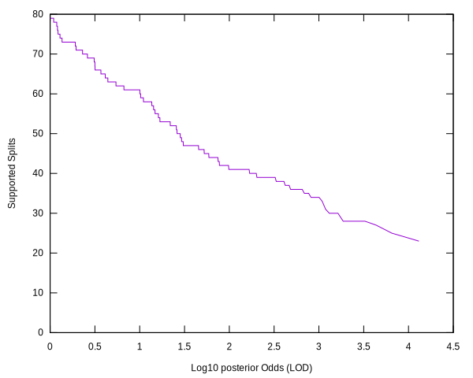
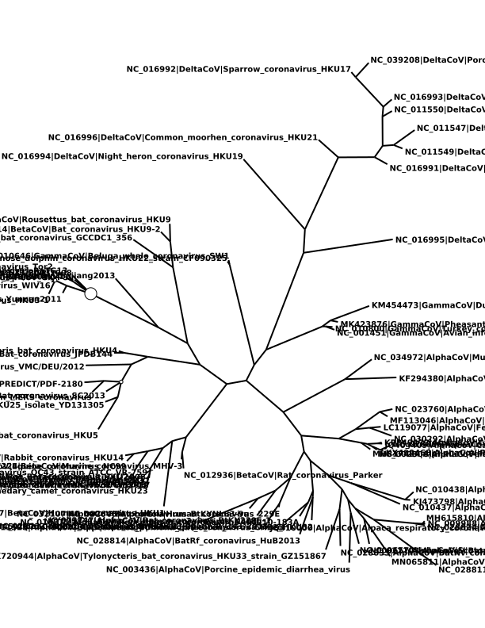
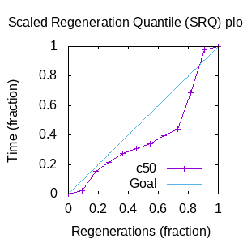
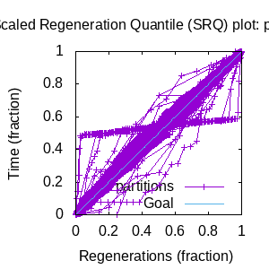

MCMC Post-hoc Analysis: 89 sequences
Data & Model
| Partition | Sequences | Lengths | Alphabet | Substitution Model | Indel Model | Scale Model |
|---|
| 1 |
data/refcov89_ORF8_aln.fasta |
234 - 303 |
DNA | S1 = tn93 |
I1 = rs07 |
scale1 ~ gamma[0.5,2] |
Scalar variables
| Statistic | Median | 95% BCI | ACT | ESS | burnin | PSRF-CI80% | PSRF-RCF |
|---|
| prior |
392.7 |
(335.6, 441.4) |
122.2 |
96 |
108
|
NA | NA |
| likelihood |
-1.125e+04 |
(-1.128e+04, -1.122e+04) |
55 |
213 |
44
|
NA | NA |
| posterior |
-1.086e+04 |
(-1.091e+04, -1.081e+04) |
40.49 |
290 |
108
|
NA | NA |
| prior_A |
-298.1 |
(-338.3, -266.2) |
150.8 |
77 |
689
|
NA | NA |
| |A| |
383 |
(354, 415) |
20.02 |
587 |
470 |
NA | NA |
| #indels |
26 |
(23, 30) |
170.8 |
68 |
601 |
NA | NA |
| |indels| |
233 |
(187, 285) |
8.3 |
1416 |
120 |
NA | NA |
| #substs |
2517 |
(2492, 2538) |
60.64 |
193 |
120 |
NA | NA |
| P1/likelihood |
-1.125e+04 |
(-1.128e+04, -1.122e+04) |
55 |
213 |
44
|
NA | NA |
| P1/prior_A |
-298.1 |
(-338.3, -266.2) |
150.8 |
77 |
689
|
NA | NA |
| P1/|A| |
383 |
(354, 415) |
20.02 |
587 |
470 |
NA | NA |
| P1/#indels |
26 |
(23, 30) |
170.8 |
68 |
601 |
NA | NA |
| P1/|indels| |
233 |
(187, 285) |
8.3 |
1416 |
120 |
NA | NA |
| P1/#substs |
2517 |
(2492, 2538) |
60.64 |
193 |
120 |
NA | NA |
| Scale[1]*|T| |
12.38 |
(11.82, 12.94) |
2.244 |
5238 |
31
|
NA | NA |
| |T| |
1.056 |
(0.8457, 1.264) |
1 |
11755 |
56
|
NA | NA |
| Heat.beta |
1 |
| | | | | |
| Scale[1] |
11.71 |
(9.515, 14.27) |
1.027 |
11444 |
59
|
NA | NA |
| tn93:pi[A] |
0.3071 |
(0.2823, 0.3318) |
6.696 |
1755 |
74
|
NA | NA |
| tn93:pi[C] |
0.2203 |
(0.2027, 0.2381) |
6.094 |
1929 |
125
|
NA | NA |
| tn93:pi[G] |
0.1897 |
(0.1728, 0.2077) |
6.783 |
1732 |
292
|
NA | NA |
| tn93:pi[T] |
0.2829 |
(0.2588, 0.3057) |
9.538 |
1232 |
345
|
NA | NA |
| tn93:kappaPyr |
2.826 |
(2.488, 3.168) |
4.096 |
2869 |
172
|
NA | NA |
| tn93:kappaPur |
2.083 |
(1.834, 2.359) |
4.765 |
2466 |
118
|
NA | NA |
| rs07:mean_length |
8.725 |
(5.515, 12.67) |
3.206 |
3666 |
98
|
NA | NA |
| rs07:log_rate |
-5.427 |
(-5.859, -5.04) |
21.63 |
543 |
79
|
NA | NA |
Phylogeny Distribution

Alignment Distribution
Partition 1
|
|
|
Diff |
|
Min. %identity |
# Sites |
Constant |
Informative |
| Initial |
FASTA |
HTML |
Diff |
|
29.8% |
364 |
26 (7.14%) |
295 (81%) |
| Best (WPD) |
FASTA |
HTML |
|
AU |
26.5% |
401 |
27 (6.73%) |
328 (81.8%) |
Mixing
Statistics: | scalar burnin | 689 | | scalar ESS | 68.84 | | topological ESS | 15.450 | | ASDSF | NA | | MSDSF | NA | | PSRF CI80% | NA | | PSRF RCF | NA |
|  |
Analysis
command line: bali-phy data/refcov89_ORF8_aln.fasta
directory: /home/russell/Projects/CoronaARG
version: 3.4.1
| chain # | burnin | subsample | Iterations (after burnin) | subdirectory |
|---|
| 1 |
1306 |
1 |
11754 |
refcov89_ORF8_aln-1 |
| P(data|M) = -11282.582 +- 0.494
|
Complete sample: 13059
topologies |
95% Bayesian credible interval: 12406 topologies |
Model and priors
Tree (+priors)
| topology | ~ uniform on tree topologies |
| branch lengths | ~ iid[num_branches[T],gamma[0.5,div[2,num_branches[T]]]] |
Substitution model (+priors)
| S1 | = |
tn93
| tn93:kappaPur | ~ | log_normal[log[2],0.25]
|
| tn93:kappaPyr | ~ | log_normal[log[2],0.25]
|
| tn93:pi | ~ | dirichlet_on[letters[@a],1]
|
|
Indel model (+priors)
| I1 | = |
rs07
| rs07:log_rate | ~ | laplace[-4,0.707]
|
| rs07:mean_length | ~ | exponential[10,1]
|
|
Scales (+priors)
{kind=link}
{kind=link}
{kind=link}
{kind=link}
{kind=link}
{kind=link}
{kind=link}
{kind=link}
{kind=link}